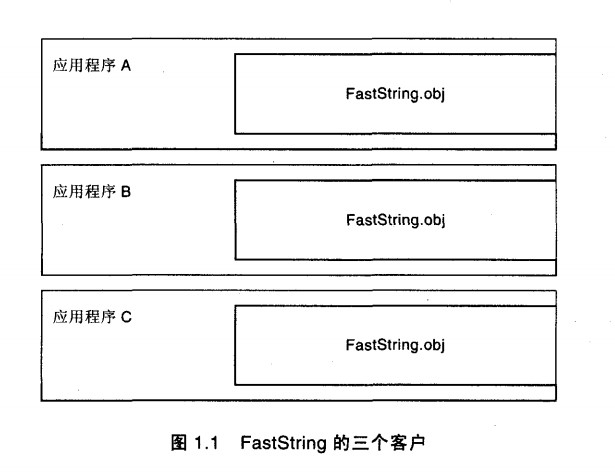
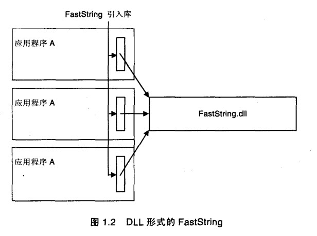
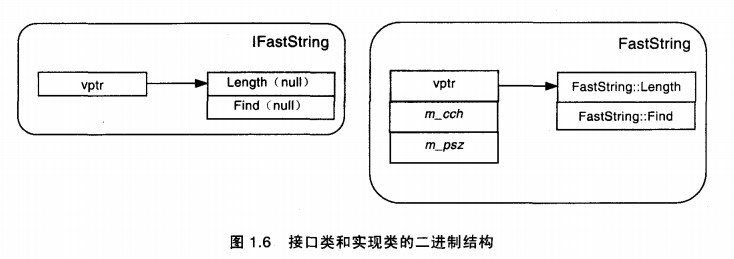

软件分发 从传统意义上讲，c++类库一直以源代码的形式分发，类库的用户可以把实现代码加入到他们的系统工程中，然后用他们的c++编译器在本地重新编译库的源代码，这么做的结果是，类库的可执行代码将成为客户应用中不可分割的一部分，想象有一个库厂商已经开发了一个算法可以在O(1)时间阶内完成子串搜索运算，字符串类定义如下：
1 2 3 4 5 6 7 8 9 10 11 12 13 14 15 16 17 18 19 20 21 22 23 24 25 26 27 28 29 30 31 32 33 34 35 class FastString { public: FastString(const char* psz); ~FastString(); int Length() const; int Find(const char* psz) const; private: char* m_psz; }; #include "FastString.h" #include <string.h> FastString::FastString(const char* psz) :m_psz(new char[strlen(psz) + 1]) { strcpy(m_psz, psz); } FastString::~FastString() { delete[] m_psz; } int FastString::Length() const { return strlen(m_psz); } int FastString::Find(const char* psz) const { //O(1) }
假设FastString类的四个方法所产生的机器码将在目标可执行文件中占有16MB的空间（空间换时间的策略）,如果三个应用都使用FastString库，那么每个可执行文件都将包含16M的类库代码，这意味着，如果一个最终用户安装了所有这三个应用程序，那么FastString实现将会占用48M的磁盘空间，更糟糕的是如果最终用户同时运行这三个程序，那么FastString代码将会占用48M的虚拟内存，因为操作系统不能够检测到多个可执行文件中重复出现的代码

这种情况下的另一个问题是，FastString类有更新，客户的应用程序必须得重新编译，以便用上更新后的代码
动态链接 解决上面的问题的一种技术是把FastString类以动态链接库（DLL）的形式包装起来,最简单的技术就是用类层次上的编辑器指示符，强迫FastString的所有方法都从Dll中引出去。Microsoft C++编译器为这种用法提供了__declspec(dllexport)关键字：
1 2 3 4 5 6 7 8 9 10 11 12 13 14 15 16 17 18 19 20 21 22 23 24 25 26 27 28 29 30 31 32 33 class __declspec(dllexport) FastStringExport { public: FastStringExport(const char* psz); ~FastStringExport(); int Length() const; int Find(const char* psz) const; private: char* m_psz; }; FastStringExport::FastStringExport(const char* psz) :m_psz(new char[strlen(psz) + 1]) { strcpy(m_psz, psz); } FastStringExport::~FastStringExport() { delete[] m_psz; } int FastStringExport::Length() const { return strlen(m_psz); } int FastStringExport::Find(const char* psz) const { //O(1) }
在使用这项技术的时候， FastString的所有方法都将被加到FastString.DLL的引出表（export list）中，允许在运行时把每个方法的名字解析到内存中对应的地址。而且，链接器将会产生一个引入库（import library） ，这个库暴露了FastString的方法成员的符号。引入库并没有包含实际的代码，它只是简单地包含一些引用，这些引用指向DLL的文件名和被引出的符号的名字。当客户链接引入库时，有一些存根会被加入到可执行文件中，它在运行时通知装载器动态装载FastString DLL，并且把所有被引入的符号解析到内存中相应的位置上。当操作系统启动客户程序时，便会引发这个解析过程，但是整个过程完全是透明的。

图1.2演示了当FastString位于DLL中时，它的运行时模型。注意，引入库往往非常小（差不多是引出符号文本的两倍大小） 。当FastString从DLL中引出时，它的机器码在用户的硬盘上只保留一份就可以了。当多个客户访问库中的代码时，操作系统的装载器可以很灵活地让所有的客户程序共享同一份“包含FastString只读可执行代码”的物理内存页。而且，如果库的厂商发现了库中的错误的话，理论上讲它可以给最终用户发放一个新的DLL，使所有的客户应用同时修正原来的错误实现代码。很显然，把FastString库放到DLL中，这是从原始的C++类走向可替换的、有效的可重用组件的重要一步。
封装和分离 为了提高Length操作的效率，可以在构造函数中把字符串的长度缓存起来，就不用重复计算长度了，厂商做了以下改进：
1 2 3 4 5 6 7 8 9 10 11 12 13 14 15 16 17 18 19 20 21 22 23 24 25 26 27 28 29 30 31 32 33 34 class __declspec(dllexport) FastString { public: FastString(const char* psz); ~FastString(); int Length() const; int Find(const char* psz) const; private: char* m_psz; const int m_cch; }; FastString::FastString(const char* psz) :m_psz(new char[strlen(psz) + 1]) ,m_cch(strlen(psz)) { strcpy(m_psz, psz); } FastString::~FastString() { delete[] m_psz; } int FastString::Length() const { return m_cch; } int FastString::Find(const char* psz) const { //O(1) }
做了这三个修改之后，库厂商重新编译链接FastString DLL，发现DLL可以通过检验，于是向客户发放FastString 2.0版本，这里厂商过于相信c++支持的封装性了，c++通过private和public关键字确实支持语法上的封装性，但是c++草案标准并没有定义二进制层次上的封装性，这是因为c++编译模型要求客户的编译器必须能够访问与对象的内存布局有关的所有信息，这样才能构造类的实例，或者调用类的非虚成员函数。这些信息包括对象的私有成员和公共成员的大小和顺序。
从根本上讲，版本问题的根源在于C＋＋的编译模型，这种模型不能支持独立二进制组件的设计。C＋＋的编译模型要求客户必须知道对象的布局结构，从而导致了客户和对象可执行代码之间的二进制耦合关系。通常情况下，二进制耦合对于C＋＋非常有好处，因为这使得编译器可以产生非常高效的代码。但是不幸的是，这种紧密耦合性使得在不重新编译客户的情况下，类的实现无法被替换。由于这种耦合性，以及上一节提到的编译器和链接器的不兼容性，“简单地把C＋＋类的定义从DLL中引出来”这种方案并不能提供合理的二进制组件结构。
接口分离 上面的问题可以这样来解决：构造一个模型，把两个抽象概念（接口和实现）做成两个分离的实体，即c++类，定义一个c++类使它代表指向一定数据类型的接口；定义另一个c++类作为数据类型的实际实现，下面的类定义说明了这项技术：
1 2 3 4 5 6 7 8 9 10 11 12 13 14 15 16 17 18 19 20 21 22 23 24 25 26 27 28 29 30 31 32 class __declspec(dllexport) FastStringItf { public: FastStringItf(const char* psz); ~FastStringItf(); int Length() const; int Find(const char* psz) const; private: class FastString; FastString* m_pThis; }; FastStringItf::FastStringItf(const char* psz) :m_pThis(new FastString(psz)) { } FastStringItf::~FastStringItf() { delete m_pThis; } int FastStringItf::Length() const { return m_pThis->Length(); } int FastStringItf::Find(const char* psz) const { return m_pThis->Find(psz); }
这个接口类的二进制布局结构并不会随着实现类FastString中数据成员的加入或者删除而改变。而且，使用这样的声明也意味着FastString的类声明不需要被包含在这个头文件中就可以进行编译。这就很有效地把FastString的实现部分隐藏起来，客户的编译器不需要知道这些细节。在使用这项技术的时候，接口方法的机器码变成了对象DLL的唯一入口点，它们的二进制结构形式永远也不会再改变。接口类方法的实现只是把方法调用传递给实际的实现类.
以上这些传递调用的方法将被编译成为FastString DLL的一部分，所以当c++实现类FastString的内存结构发生变化时，客户永远也不会包含c++实现类FastString的类定义，这使得FastString实现者非常灵活，可以随着时间的推移改变它的实现过程，而不会打断现有的客户。
虽然使用接口分离的方法有它的优点，但是接口类必须要把每个方法调用显示地传递给实现类，编写这些传递过程非常冗长，对于性能方面每个方法增加两个函数调用的开销也不理想
抽象类作为二进制接口 __declspec(dllexport) 解决了函数导出的问题，但是c++为了允许操作符重载和函数重载，c++编译器会将每个入口点的符号名进行篡改，也就是名字改编，而不同编译器的改编方案又不统一，消除名字改编的技术是extern “C”,但是它针对的是全局函数而不能是成员函数。
接口分离确实可以解决c++编译器链接器的部分兼容问题，但是如何在不同编译器上统一运行时表现语言的特征，就需要所有c++编译器都实现同样的虚函数调用机制。
在c++中，虚函数的运行时实现了vptr和vtbl的形式，每个类的实例包含一个不可见的数据成员，被称为虚函数指针，这个指针被构造函数自动初始化，指向类的vtbl中，当客户调用虚函数的时候，编译器产生代码反指向到vptr，索引到vtbl中，然后在指定的位置上找到函数指针，并发出调用，这就是c++中实现多态性以及动态调用分发的过程。
1 2 3 4 5 6 7 8 9 10 11 12 13 14 15 16 17 18 19 20 class IFastString { public: virtual int Length() const = 0; virtual int Find(const char* psz) const = 0; }; class FastString : public IFastString { public: FastString(const char* psz); ~FastString(); int Length() const; int Find(const char* psz) const; private: char* m_psz; const int m_cch; };
最终FastString和IFastString的关系图如下图所示

此时客户没有实现类的定义仍然不能构造FastString类的对象，但是把实现类的定义暴露给客户就等于绕过了接口的二进制封装，从而破坏了使用接口类的基本意图
1 2 3 4 5 6 7 8 extern "C" IFastString * CreateFastString(const char* psz); IFastString* CreateFastString(const char* psz) { return new FastString(psz); }
客户调用代码如下
1 2 3 4 5 6 7 8 9 10 #include "IFastString.h" int main() { IFastString* pfs = CreateFastString("hello world"); int n = pfs->Find("hello"); delete pfs; return n; }
客户端调用逻辑有问题，因为接口类的析构并不是虚函数，这意味着对delete操作符的调用并不会动态找到最终派生类的析构函数，所以会发生内存泄漏。
1 2 3 4 5 6 7 8 9 10 11 12 13 14 15 16 17 18 19 20 21 22 23 24 25 26 27 28 29 30 31 32 33 34 35 36 37 38 39 40 41 42 43 44 45 46 47 48 49 50 51 52 53 54 55 56 57 58 59 60 61 62 63 64 65 66 67 68 69 class IFastString { public: virtual void Delete() = 0; virtual int Length() const = 0; virtual int Find(const char* psz) const = 0; }; extern "C" IFastString * CreateFastString(const char* psz); class FastString : public IFastString { public: FastString(const char* psz); ~FastString(); void Delete(); int Length() const; int Find(const char* psz) const; private: char* m_psz; const int m_cch; }; IFastString* CreateFastString(const char* psz) { return new FastString(psz); } FastString::FastString(const char* psz) :m_psz(new char[strlen(psz) + 1]) , m_cch(strlen(psz)) { strcpy(m_psz, psz); } FastString::~FastString() { delete[] m_psz; } void FastString::Delete() { delete this; } int FastString::Length() const { return m_cch; } int FastString::Find(const char* psz) const { //O(1) } int main() { int n = -1; IFastString* pfs = CreateFastString("hello world"); if (pfs) { n = pfs->Find("hello"); pfs->Delete(); } return n; }
下图显示了FastString的运行时内存结构
在FasString DLL中，除了一个入口函数之外，其他所有的入口函数都是虚函数。接口类的虚函数总是通过保存在vtbl中的函数指针被间接调用，客户程序不需要在开发时候链接这些函数的符号名。这意味着接口方法可以不受“不同编译器之间符号名改编方式的不同”的影响。唯一需要通过名字显式链接的入口函数是CreateFastString，这个全局函数使得客户可以进入到FastString的世界中。然而，请注意，这个函数使用extern “C”被引出，从而避免了符号名改编方式的冲突。这也隐含着所有的C++编译器都期望引入库和DLL引出同样的符号。使用这项技术的一个直接结果是，我们可以安全地在一个C++环境中暴露DLL中的类，并且在另一个C++开发环境中访问这个类。
运行时多态性 FastString DLL只引出了一个符号CreateFastString，这使得客户可以很方便地按需动态装入DLL（使用LoadLibrary)，并且使用GetProcAddress得到唯一的入口函数
1 2 3 4 5 6 7 8 9 10 11 12 13 14 15 16 17 18 const TCHAR szDLL[] = _TEXT("FastString.dll"); const char szfs[] = "CreateFastString"; HINSTANCE h = ::LoadLibrary(szDLL); if (h) { typedef IFastString* (*pfn)(const char*); pfn fs = (pfn)GetProcAddress(h, szfs); if (fs) { IFastString* cfs = (fs)("hello world"); if (cfs) { int size = cfs->Length(); cfs->Delete(); } } }
使用这项技术有两种好处：
对象扩展性 尽管接口具有不变性的原则，但是我们通常要在一个接口已经被设计好之后，希望能够加入原先没有预见到的新功能，我们可以利用vtbl布局结构的知识，简单地把新的方法追加在现有接口定义的尾部
1 2 3 4 5 6 7 8 9 class IFastString { public: virtual void Delete() = 0; virtual int Length() const = 0; virtual int Find(const char* psz) const = 0; virtual int FindN(const char* psz, int n); };
这种方案可以正常工作，当老客户得到了包含FindN的新对象时，它们仍然能够正常工作，然而，新的客户总是期望IFastString有第四个方法，但它碰巧使用老的对象时，程序就会崩溃
这项技术的问题在于，它修改了公开的接口，从而打破了对象的封装性。这意味这接口必须是不可改变的，一旦公开之后，接口就不能再变化。这个问题的解决办法是”允许实现类暴露多个接口“，这可以通过两种途径获得：
为了在IFastString接口中增加FindN操作，使客户可以找到一个子串第n次出现的位置，我们可以从IFastString接口派生出另一个接口
1 2 3 4 5 6 class IFastString2 : IFastString { public: virtual int FindN(const char* psz, int n) = 0; };
客户可以在运行时询问对象，以确定对象是否与IFastString相容，客户可以使用c++的dynamic_cast操作符
1 2 3 4 5 6 7 int test(IFastString* pfs) { IFastString2* pfs2 = dynamic_cast<IFastString2*>(pfs); if (pfs2) return pfs2->FindN("mm", 10); ... }
这种动态系统可以随时间的推移不断提供新的扩展功能。
当对象需要暴露新的正交功能时，考虑一下当我们需要为FastString实现类增加永久性支持的功能，我们可以在IFastString扩展版本的接口中加入Load和Save方法，但是极有可能其他非IFastString兼容的对象也需要永久性，此时IpersistentObject接口应该具有通用性，应该是一个独立的接口，不需要从IFastString继承：
1 2 3 4 5 6 7 8 class IPersistentObject { public: virtual void Delete() = 0; virtual bool Load(const char* pszFileName) = 0; virtual bool Save(const char* pszFileName) = 0; };
这样的定义并没有妨碍FastString实现也可以具有永久性，只是必须同时实现IFastString和IPersistentObject接口。
1 2 3 4 5 6 7 8 9 10 11 12 13 14 15 16 class FastString : public IFastString , public IPersistentObject { public: FastString(const char* psz); ~FastString(); void Delete(); int Length() const; int Find(const char* psz) const; bool Load(const char* pszFileName); bool Save(const char* pszFileName); private: char* m_psz; const int m_cch; };
为了把FastString保存到磁盘上，客户只要简单地使用RTTI得到一个指向对象暴露出来的IPersistentObject接口即可：
1 2 3 4 5 6 7 8 bool SaveString(IFastString* pfs, const char* pszFN) { bool bResult = false; IPersistentObject* ppo = dynamic_cast<IPersistentObject*>(pfs); if (ppo) bResult = ppo->Save(pszFN); return bResult; }
这项技术可以正常工作，编译器可以在运行时检查对象，以便确定对象是否继承自IPersistentObject，但是这里仍然有问题。
1 2 3 4 5 6 7 8 9 10 11 12 13 14 15 16 17 class IFastString { public: virtual void* Dynamic_Cast(const char* pszType) = 0; virtual void Delete() = 0; virtual int Length() const = 0; virtual int Find(const char* psz) const = 0; }; class IPersistentObject { public: virtual void* Dynamic_Cast(const char* pszType) = 0; virtual void Delete() = 0; virtual bool Load(const char* pszFileName) = 0; virtual bool Save(const char* pszFileName) = 0; };
既然所有的接口都需要暴露这个方法以及Delete方法，于是很自然的想法是把这些公共的方法提升到一个基接口中，然后所有其他的接口都从这个接口继承得到：
1 2 3 4 5 6 7 8 9 10 11 12 13 14 15 16 17 18 19 20 21 class IExtensibleObject { public: virtual void* Dynamic_Cast(const char* pszType) = 0; virtual void Delete() = 0; }; class IFastString : public IExtensibleObject { public: virtual int Length() const = 0; virtual int Find(const char* psz) const = 0; }; class IPersistentObject : public IExtensibleObject { public: virtual bool Load(const char* pszFileName) = 0; virtual bool Save(const char* pszFileName) = 0; };
Dynamic_Cast的实现通过操作对象的类型层次结构，模拟出RTTI的功能，如下图所示
1 2 3 4 5 6 7 8 9 10 void* FastString::Dynamic_Cast(const char* pszType) { if (strcmp(pszType, "IFastString") == 0) return static_cast<IFastString*>(this); else if (strcmp(pszType, "IPersistentObject") == 0) return static_cast<IPersistentObject*>(this); else if (strcmp(pszType, "IExtensibleObject") == 0) return static_cast<IFastString*>(this); return 0; }
cast指令的编译版本只是简单地在对象的this指针上加上固定的偏移，就可以找到基类的布局结构的起始处。
资源管理 当我们检查客户对Dynamic_Cast方法的使用模式时，我们发现单个对象支持多个接口还有个问题需要解决。
1 2 3 4 5 6 7 8 9 10 11 12 13 14 15 16 17 18 19 void f() { IFastString* pfs = 0; IPersistentObject* ppo = 0; pfs = CreateFastString("hello world"); if (pfs) { ppo = (IPersistentObject*)pfs->Dynamic_Cast("IPersistentObject"); if (!ppo) { pfs->Delete(); } else { ppo->Save("d:\\test.txt"); ppo->Delete(); } } }
尽管对象最初是通过其 IFastString 接口与客户联系起来的，但是客户代码却是通过IPersistentObject 接口调用Delete 方法的。有了C＋＋中多重继承的行为方式，这不成问题，因为所有属于该类的、从IExtensibleObject 派生的vtbl都将指向 Delete方法的唯一 一份实现代码。然而，客户现在必须要记录下哪个指针是与哪个对象联系在一起的，并且每个对象只能调用一次Delete方法。对于上面给出的简单代码，这不是繁重的负担。但是在复杂的客户代码中，管理这些关系会变得非常复杂，并且很容易出错。简化客户的任务的一种办法是，把管理对象生命周期的责任推给对象实现部分。毕竟，允许客户显式地删除一个对象，这种做法会泄露出另一个实现细节：对象是被分配在堆（heap）上的事实。
对于这个问题，一个简单的解决方法是让每个对象都维护一个引用计数，当接口指针被复制的时候，该计数值增加；当接口指针被销毁的时候，该计数值减少。这意味着要把IExtensibleObject定义修改下
1 2 3 4 5 6 7 8 9 10 11 12 13 14 class IExtensibleObject { public: virtual void* Dynamic_Cast(const char* pszType) = 0; virtual void Delete() = 0; }; 改成 class IExtensibleObject { public: virtual void* Dynamic_Cast(const char* pszType) = 0; virtual void AddRef() = 0; virtual void Release() = 0; };
有了这些方法之后，现在IExtensibleObject的所有客户必须遵守下面两条要求：
1 2 3 4 5 6 7 8 9 10 11 12 13 14 15 16 17 class FastString : public IFastString , public IPersistentObject { public: ... FastString(const char* psz) : m_ref(0){} void AddRef(){++m_ref;} void Release() { if(--m_ref == 0) delete this; } private: ... int m_ref; };
很容易可以将这份样板代码放到基类中，或者放到预编译宏中，供所有实现类使用。
1 2 3 4 5 6 7 8 9 10 11 12 13 14 15 16 17 18 19 20 21 22 23 24 IFastString* CreateFastString(const char* psz) { IFastString* pFsResult = new FastString(psz); if (pFsResult) pFsResult->AddRef(); return pFsResult; } void* FastString::Dynamic_Cast(const char* pszType) { void* pvResult = 0; if (strcmp(pszType, "IFastString") == 0) pvResult = static_cast<IFastString*>(this); else if (strcmp(pszType, "IPersistentObject") == 0) pvResult = static_cast<IPersistentObject*>(this); else if (strcmp(pszType, "IExtensibleObject") == 0) pvResult = static_cast<IFastString*>(this); else return 0; (IPersistentObject*)pvResult->AddRef(); return pvResult; }
有了这两处修改之后，对应的客户代码现在也变得更加统一，更加明确了
1 2 3 4 5 6 7 8 9 10 11 12 13 14 15 16 void f() { IFastString* pfs = 0; IPersistentObject* ppo = 0; pfs = CreateFastString("hello world"); if (pfs) { ppo = (IPersistentObject*)pfs->Dynamic_Cast("IPersistentObject"); if (ppo) { ppo->Save("d:\\test.txt"); ppo->Release(); } pfs->Release(); } }
因为每个指针都被看做一个具有独立生命周期的实体，所以客户并不需要把哪个指针与哪个对象联系起来。客户只需要地遵守两条简单的规则，从而允许对象自己管理它的生命周期。而且AddRef/Release的调用可以很容易地被隐藏到c++智能指针的后面。
以上就是组件对象模型（COM）